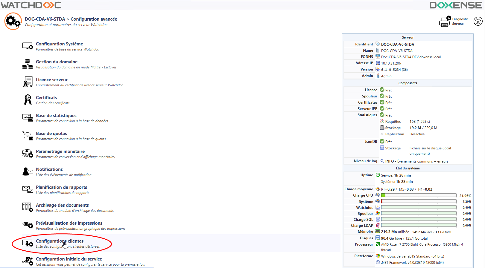
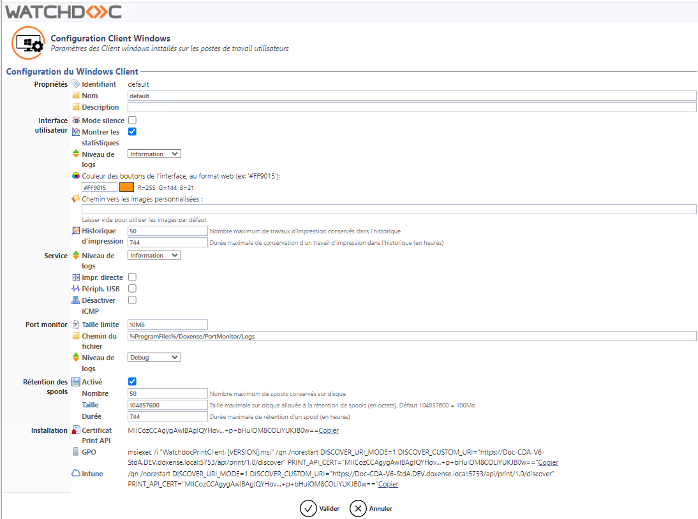
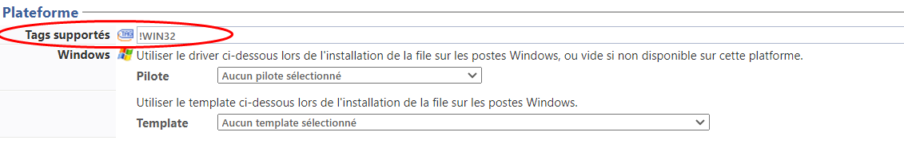

Accéder à l'interface de configuration
Pour configurer Watchdoc Print Client for Windows,
-
accéder à l'interface d'administration de Watchdoc en tant qu'administrateur
-
depuis le Menu principal, section Configuration, cliquez sur Configuration avancée ;
-
dans l'interface Configuration avancée, cliquez sur Configuration Client Windows :

èVous accédez à l'interface Configuration Client Windows.
Configurer Watchdoc Print Client for Windows
-
Propriétés : rassemble les propriétés du client, dont un identifiant interne, non-modifiable.
-
Nom : saisissez, si nécessaire, un nom pour le Client ;
-
Description : si nécessaire, saisissez des informations complémentaires relatives au Client.
-
-
Interface utilisateur : précisez les caractéristiques de l'interface utilisateur.
-
Mode silence : cochez la case si vous souhaitez que WPC for Windows fonctionne en mode silencieux. Ce mode vous permet de masquer aux utilisateurs les onglets "Périphériques", "Travaux" et "Emplacements" pour ne laisser que l'onglet "Profil". Cet onglet affiche le profil de l'utilisateur ainsi que ses statistiques d'impression.
-
Montrer les statistiques : cochez la case si vous souhaitez afficher les statistiques d'utilisation à l'utilisateur, dans l'onglet "Profil".
-
Niveau de logs : dans la liste, sélectionnez le niveau d'information que vous souhaitez tracer dans les journaux d'événements de WPC.
Ces traces requérant des ressources ainsi qu'un espace de stockage importants, nous vous recommandons de ne les activer qu'à des fins d'analyse en cas d'audit ou de problème et de les désactiver une fois le diagnostic établi. -
Couleur : dans le champ, saisissez le code hexadécimal de la couleur que vous souhaitez appliquer dans l'interface utilisateur (cf. Personnaliser WPC) ;
-
Chemin vers les images personnalisées :dans le champ, saisissez le chemin d'accès aux images permettant de personnaliser l'interface utilisateur (cf. Personnaliser WPC).
-
Historique d'impression : indiquez les paramètres de l'historique des travaux d'impression demandés (affiché sous l'onglet Travaux d'impression) :
-
nombre maximum : indiquez le nombre de travaux envoyés qui doivent être conservés sur le disque et affichés dans l'historique (50 max.) ;
-
durée maximale de conservation : indiquez, en heures, la durée maximale de conservation des travaux affichés dans l'historique (1 mois max.).
-
-
-
Service :
-
Niveau de logs : dans la liste, sélectionnez le niveau d'information que vous souhaitez tracer dans les journaux d'événements de WPC.
Ces traces requérant des ressources ainsi qu'un espace de stockage importants, nous vous recommandons de ne les activer qu'à des fins d'analyse en cas d'audit ou de problème et de les désactiver une fois le diagnostic établi. -
Impression directe : cochez la case pour autoriser l'utilisateur à imprimer en direct (sans passer par Watchdoc) si le service Watchdoc est défaillant.
Ce mode suppose deux prérequis :
-
la base interserveur doit être activée (cf. Configuration système - Section Impression interserveur) et accessible de tous les serveurs ;
-
l'utilisateur doit s'être authentifié au-moins une fois sur le WES du périphérique d'impression désigné pour l'impression directe.
En cas de panne, l'utilisateur choisit d'attendre que le serveur soit de nouveau disponible ou d'imprimer directement. Dans ce cas :
-
si WPC fonctionne avec une file universelle, l'utilisateur peut choisir le périphérique sur lequel il souhaite imprimer;
-
si WPC fonctionne avec une file physique, l'utilisateur peut imprimer directement sur ce périphérique.
-
-
-
Périph. USB : cochez la case pour autoriser WPC à comptabiliser les travaux des périphériques connectés en USB et non pas en réseau.
Dans ce cas, les travaux d'impression figurent dans la base de données configurée (en master s'il s'agit d'une configuration en domaine) ainsi que dans les fichiers traces du service Windows de WPC.
-
Désactiver ICMP
 Internet Control Message Protocol (Protocole de message de contrôle sur Internet) est un protocole de couche réseau (no 3 du modèle OSI) qui contrôle les erreurs de transmission. Ainsi, une machine émettrice sait qu'il y a eu un incident de réseau, par exemple lorsqu’un service ou un hôte est inaccessible. La commande Ping est un exemple d'application utilisant des messages de contrôle ICMP.
Aucun numéro de port TCP ou UDP n'est associé aux paquets ICMP, car ces numéros sont associés à la couche de transport supérieure[5].
(Source : Wikipédia) : cochez la case pour désactiver les requêtes ICMP afin de ne pas saturer le serveur dans le cas où WPC for Windows est installé sur un grand nombre de postes.
Internet Control Message Protocol (Protocole de message de contrôle sur Internet) est un protocole de couche réseau (no 3 du modèle OSI) qui contrôle les erreurs de transmission. Ainsi, une machine émettrice sait qu'il y a eu un incident de réseau, par exemple lorsqu’un service ou un hôte est inaccessible. La commande Ping est un exemple d'application utilisant des messages de contrôle ICMP.
Aucun numéro de port TCP ou UDP n'est associé aux paquets ICMP, car ces numéros sont associés à la couche de transport supérieure[5].
(Source : Wikipédia) : cochez la case pour désactiver les requêtes ICMP afin de ne pas saturer le serveur dans le cas où WPC for Windows est installé sur un grand nombre de postes. -
Port monitor
le Port Monitor du Print Client est un port d'impression propriétaire, lien de communication entre la partie qui opère en tant qu'utilisateur du Spooler et la partie qui opère en tant que Système. C’est une DLL exécutée en tant qu'utilisateur demandant une impression et qui communique avec le Serveur d’impression de Windows. : indiquez les caractéristiques relatives aux journaux d'événements du Port Monitor WPC : -
Taille limite : saisissez, en mégabits, la taille maximale des fichiers de log du port monitor sur le disque ;
-
Chemin du fichier : indiquez le chemin du dossier dans lequel seront stockés les fichiers de logs du port monitor ;
-
Niveau de logs : dans la liste, sélectionnez le niveau des logs relatifs au Port monitor :
-
-
Rétention de spools : cochez cette case pour activer la rétention de spools.
Cette rétention permet aux utilisateurs de réimprimer les travaux d'impression qui ont été précédemment envoyés au serveur.
Les spools sont ensuite stockés sur le poste de travail et sont consultables sous l'onglet Travaux d'impression. Spécifiez les paramètres de cette rétention de spool dans les champs suivants :-
Nombre : indiquez le nombre maximum de spools conservés sur le disque ;
-
Taille : indiquez la taille maximale des octets alloués à la rétention du spool ;
-
Durée: indiquez, en heures, la durée maximale de la rétention (720 heures pour 30 jours par défaut).

-
Préciser un environnement d'exploitation
Par défaut, toutes les files physiques sont considérées comme utilisables par WPC.
Si vous souhaitez exclure une file physique de WPC, il convient d'appliquer un "tag" spécifique sur cette file :
-
depuis le Menu principal, section Exploitation, cliquez sur Files d'impression, emplacements, groupes de files & pools ;
-
dans la liste des files, cliquez sur le bouton
 pour éditer la file physique que vous souhaitez exclure ;
pour éditer la file physique que vous souhaitez exclure ; -
dans l'interface Propriétés de la file d'impression, rendez-vous dans la section Plateforme ;
-
dans le champ Tags supportés, saisissez la valeur ![nom_de_lenvironnement] pour exclure la file de WPC installé sur l'environnement cité. Utilisez l'espace si vous souhaitez combiner plusieurs tags :
-
!WIN32 pour exclure cette file si vous utilisez WPC dans un environnement MS Windows 32 bits ;
-
!WIN64 pour exclure cette file si vous utilisez WPC dans un environnement MS Windows 64 bits ;
-
!CHROME_EXT pour exclure cette file si vous utilisez WPC pour Chrome ;
-
!ANDROID IOS pour exclure cette file si vous utilisez WPC pourAndroid :

-
-
cliquez sur le bouton
 pour enregistrer la configuration de la file ;
pour enregistrer la configuration de la file ; -
lancez WPC for Windows pour constater que la file exclue ne figure plus dans la liste des périphériques d'impression proposés.